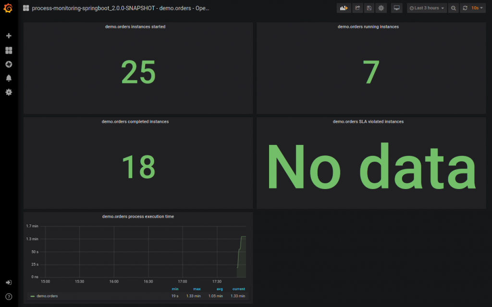

Introducing process operational monitoring for Kogito
Monitoring is a well known concept in Kogito: the support for decisions was available since Kogito 0.11 through the Prometheus monitoring add-on.
Today we announce that, starting from Kogito 1.11.0, this addon is enhanced to enable monitoring of processes.
Unlike decisions, however, the feature is currently limited to operational metrics. The domain metrics section is a bit more complex to handle compared to decisions, so we decided to split the two and take some more time to properly design the latter while releasing the former to anyone who may benefit from it.
Key Concepts
The operational dashboard is intended to be used to check how your application responds quantitatively and to identify and react to possible malfunctions (e.g. slow responses, crash loops etc.).
The addon currently exports one Grafana operational dashboard per process, which contains:
- Total number of created instances
- Total number of running instances
- Total number of completed instances
- Total number of instances that violated SLAs
- Average process execution time, counted as the delta between the completion instant and the creation instant.
There’s also a Global operational dashboard that contains the same graphs but with aggregated metrics for all the process types.
You can use these default dashboards, or you can personalize them and use your custom dashboards.
How To Use It
First of all, the add-on must be imported in your Kogito project. The correct flavour (Quarkus or Spring Boot) must be chosen, depending on your underlying framework.
Assuming that you have correctly imported the Kogito BOM to properly manage the versions, add the following dependency to your pom.xml:
<!-- Quarkus --> <dependency> <groupId>org.kie.kogito</groupId> <artifactId>kogito-addons-quarkus-monitoring-prometheus</artifactId> </dependency> <!-- Spring Boot --> <dependency> <groupId>org.kie.kogito</groupId> <artifactId>kogito-addons-springboot-monitoring-prometheus</artifactId> </dependency>
At this point, once the application is packaged with mvn clean package the dashboards are generated under the path target/generated-resources/kogito/dashboards and the DevOps engineer can easily inject them during the deployment of the Grafana container.
For the Grafana provisioning, we suggest having a look at the official documentation.

Examples
Complete examples are available for both Quarkus and Spring Boot. Check them out and go through the READMEs to get your hands on the addon in the real world.